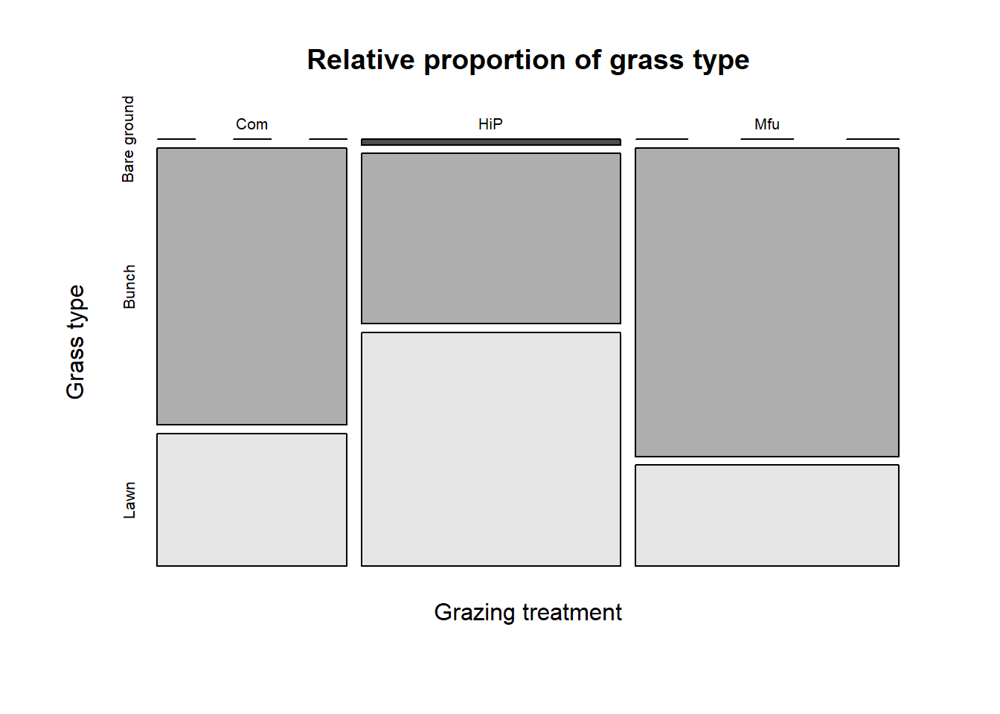
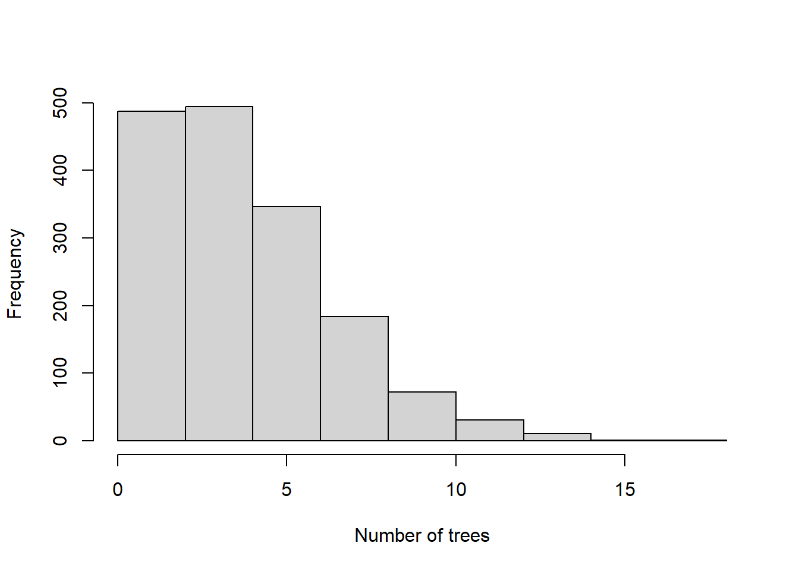
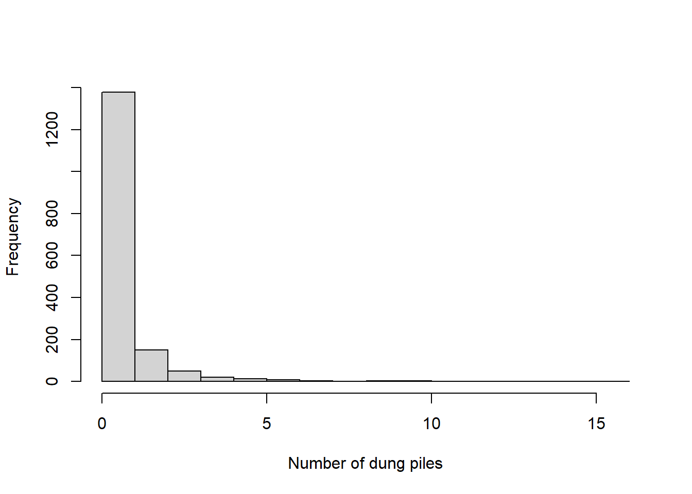

Code
library(tidyverse)
library(zoo)
library(writexl)
library(readxl)
library(readr)The overall objective of this chapter was to quantify the long-term effects of grazing by large mammalian herbivores on the accumulation of belowground biomass in the form of roots and root structures in grass species. This entialed two fieldwork components, separated into a) aboveground and b) belowground dimensions. First, aboveground surveys provided data on the composition of grass communities in areas with different histories of native mammalian herbivore grazing (0, 3 and 127 years). Using these data, the dominant grass species in areas with different grazing histories were identified and excavated to compare abovegound and belowground biomass distribution. This page documents the steps needed to clean, process and analyse these data.
In January - March 2022 aboveground surveys were conducted in Hluhluwe-iMfolozi Park (HiP), located in the KwaZulu-Natal Province of South Africa. To describe and compare grass communities in areas with different wildlife grazing histories…
These data were collected along 1km transects in three areas with different histories of wildlife grazing. The first treatment (HiP: n = 6) had ~ 127 years of wildlife grazing exposure, the second (Mfu: n = 6) had about 3 years of wildlife grazing exposure and the third (Com: n = 0) had none.
library(tidyverse)
library(zoo)
library(writexl)
library(readxl)
library(readr)transect <- read_excel("C:/Users/au701238/OneDrive - Aarhus Universitet/Desktop/PhD_CM/PhD Plan/Chapter 1/Data/Grass Community Shifts/Aboveground/TransSect.xlsx")
#Plot the data
mosaicplot(table(transect$treatment, transect$type),
color = T, xlab = "Grazing treatment", ylab = "Grass type",
main = "Relative proportion of grass type",
na.action(na.omit))
tree <- read_delim("C:/Users/au701238/OneDrive - Aarhus Universitet/Desktop/PhD_CM/PhD Plan/Chapter 1/Data/Grass Community Shifts/Aboveground/TransTree.csv",
delim = ";", escape_double = FALSE, trim_ws = TRUE)
#Change NA to 0 for tree count (because 0 trees were counted)
tree$count[is.na(tree$count)]<-0
#Count the number of trees per section
num_t <- tree %>%
group_by(transect, section) %>%
summarise(count = sum(count)) %>%
#And calculate the moving average
group_by(transect) %>%
mutate(t_abundance = rollmean(count, k=2, fill=NA, align="right")) %>%
#And assign values to first sections
mutate(t_abundance = ifelse(is.na(t_abundance), count, t_abundance))
#Create a new data frame to join all cleaned and processed data
data <- left_join(transect, num_t) %>%
#And rename the column
rename(t_count = count)
#Look at data
hist(num_t$t_abundance, main = "", xlab = "Number of trees")
dung <- read_delim("C:/Users/au701238/OneDrive - Aarhus Universitet/Desktop/PhD_CM/PhD Plan/Chapter 1/Data/Grass Community Shifts/Aboveground/TransDung.csv",
delim = ";", escape_double = FALSE, trim_ws = TRUE)
#Change NA to 0 for dung count
dung$count[is.na(dung$count)]<-0
#Count the number of dung per section
num_d <- dung %>%
group_by(transect, section) %>%
summarise(count = sum(count)) %>%
#And calculate the moving average
group_by(transect) %>%
mutate(d_abundance = rollmean(count, k=2, fill=NA, align="right")) %>%
#And assign values to the first sections
mutate(d_abundance = ifelse(is.na(d_abundance), count, d_abundance)) %>%
#Also calculate a binary variable for dung/no dung per section
# based on moving average (i.e., dung abundance)
mutate(dungB = ifelse(d_abundance > 0, 1, d_abundance))
#Join to clean data frame
data <- left_join(data, num_d) %>%
#Rename a column
rename(d_count = count)
#Look at data
hist(num_d$d_abundance, main = "", xlab = "Number of dung piles")